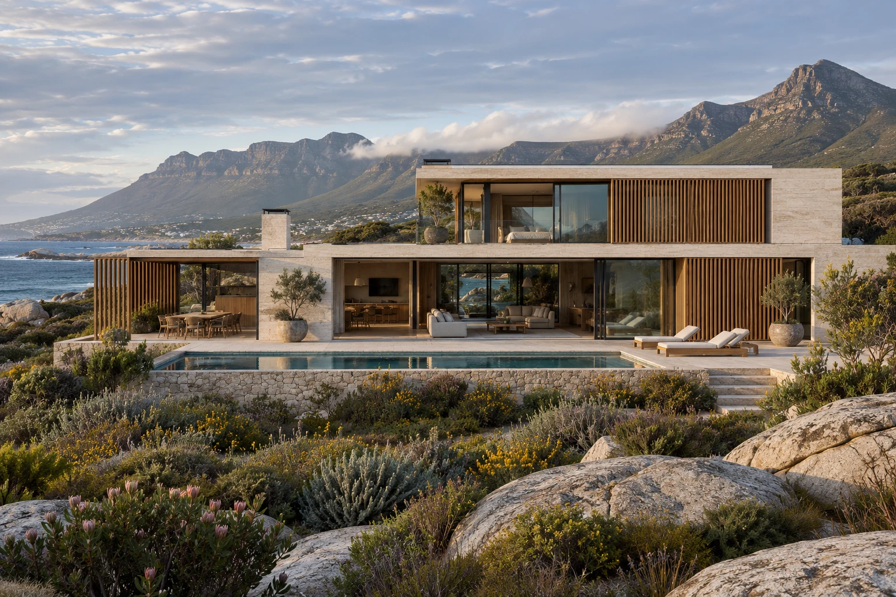
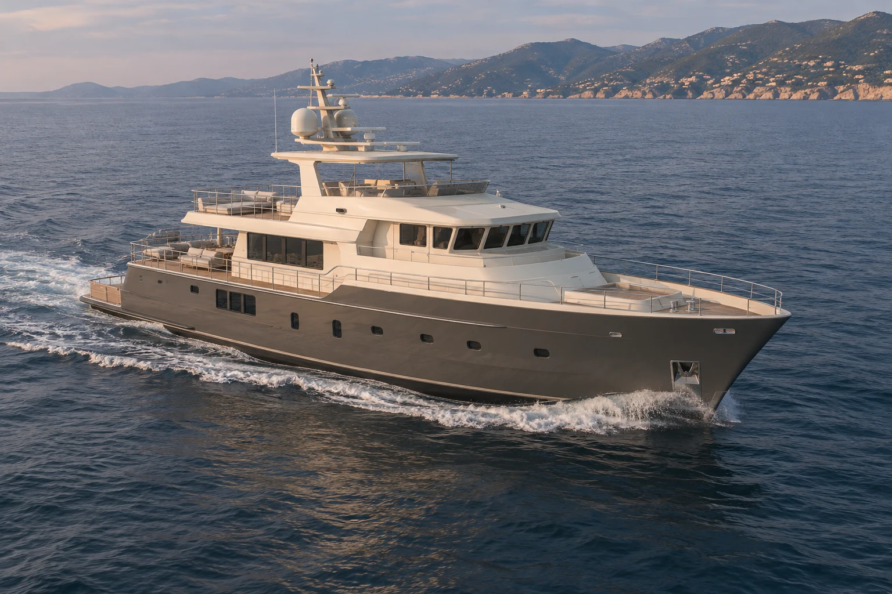
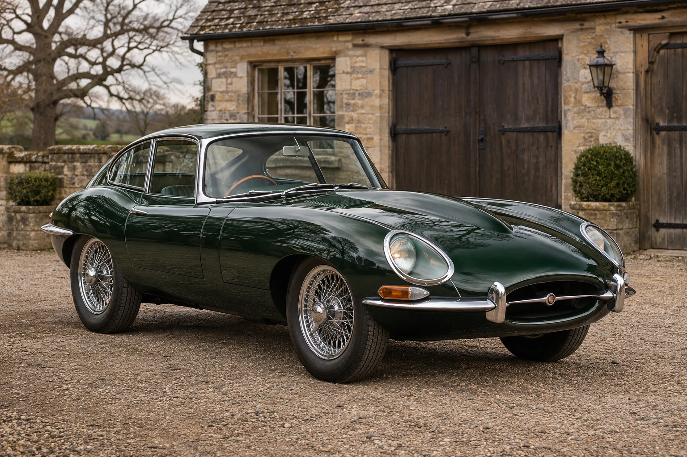

UK · Europe · South Africa
Flagship examples
Explore the ownership costs, technical evidence and cross-border purchase routes behind three fictional assets. Every dossier is open in full.

Real estate · South Africa
Granite Coast House
5 bedrooms · R32,000,000 illustrative price
Read dossier →
Yachts · Italy
Meridian 32
32.40 m length overall · €7,200,000 illustrative price
Read dossier →
Classic cars · United Kingdom
The Oxfordshire Coupé
1967 model year · £82,000 illustrative price
Read dossier →AI-generated editorial illustrations. The three examples demonstrate how to assess an asset. They are unavailable for purchase.